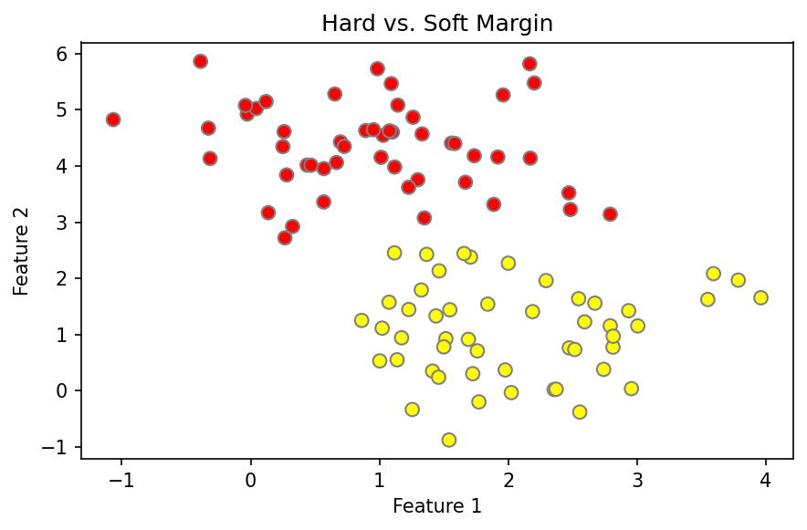

Grundidee
Die Leitfrage lautet: Dürfen Datenpunkte innerhalb des Margins liegen – und wenn ja, in welchem Ausmaß?
Diese Seite erklärt, wie sich die SVM zwischen einem harten und einem weichen Margin verhält, welche Rolle C spielt und wie daraus die Soft-Margin-Formulierung entsteht.
Bei SVMs kann man den Margin entweder hart (hard) oder weich (soft) definieren.
Die Leitfrage lautet: Dürfen Datenpunkte innerhalb des Margins liegen – und wenn ja, in welchem Ausmaß?
Der zugehörige Hyperparameter ist in sklearn das Argument C.
Der optimale Wert hängt vom Datensatz ab und wird typischerweise per Cross-Validation bestimmt.
C steuert den Trade-off zwischen Margin-Größe und Fehlertoleranz.
Große Werte von C entsprechen einem strengen, fast hard-margin-artigen Modell.
Kleine Werte von C erlauben mehr Verletzungen des Margins und machen das Modell weicher.
C ist also ein Regularisierungsparameter, der den Trade-off zwischen Margin-Größe und Fehlertoleranz steuert.
In der Mathematik wird die Toleranz über die Slack-Variable \(\xi_i\) formuliert.
Der Parameter C stellt einen Trade-off zwischen „großem Margin“ und „Verletzung des Margins“ her.
Ein großer Margin ist erwünscht, aber Verletzungen des Margins sind bei nicht perfekt trennbaren Daten oft unvermeidlich.
Genau deshalb nennt man diesen Term auch Regularisierung: Margin-Maximierung ist eine Form von Regularisierung.
Eine naheliegende Loss Function wäre die Accuracy, also die Übereinstimmung von Vorhersagen und Labels.
Diese ist hier jedoch ungeeignet, weil es sich um ein kombinatorisches Optimierungsproblem handelt.
Deshalb braucht man eine kontinuierliche Loss Function.
Eine passende Verlustfunktion ist die Hinge Loss.
Sie bestraft Punkte, die innerhalb des Margins liegen oder falsch klassifiziert sind.
Damit ergibt sich das letztlich optimierbare Problem zu:
Das ist die Soft-Margin-Formulierung der SVM.
Im Beispiel sieht man denselben Datensatz mit zwei verschiedenen Werten für C: einmal C = 10.0 und einmal C = 0.1.
Der große C-Wert führt zu einer strengeren Trennung.
Der kleine C-Wert führt zu mehr Toleranz gegenüber Margin-Verletzungen.
from sklearn.datasets import make_blobs
from sklearn.svm import SVC
import matplotlib.pyplot as plt
X, y = make_blobs(n_samples=100, centers=2,
random_state=0, cluster_std=0.8)
model_hard = SVC(kernel='linear', C=10.0).fit(X, y)
model_soft = SVC(kernel='linear', C=0.1).fit(X, y)
fig, ax = plt.subplots(figsize=(6, 4))
ax.scatter(X[:, 0], X[:, 1], c=y, s=50, cmap='autumn', edgecolors='gray')
ax.set_title("Hard vs. Soft Margin")
ax.set_xlabel("Feature 1")
ax.set_ylabel("Feature 2")
plt.tight_layout()
print("Hard Margin Modell:", model_hard)
print("Soft Margin Modell:", model_soft)
print("Code läuft wirklich")

Hard Margin Modell: SVC(C=10.0, kernel='linear')
Soft Margin Modell: SVC(C=0.1, kernel='linear')